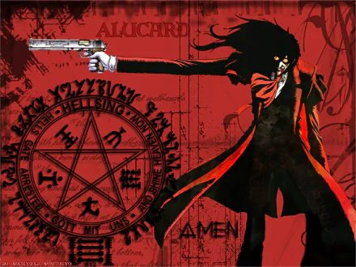

Crimson Legion
You are a walking graveyard. Consumed souls are simultaneously extra lives, summonable familiars, and the fuel for your most horrifying release.

Crimson Legion
You are a walking graveyard. Consumed souls are simultaneously extra lives, summonable familiars, and the fuel for your most horrifying release.
What the technique actually does.
Soul Stock
The muster roll: Soul Stock maximum = level × CE modifier (minimum level), beginning with a GM-approved starting stock. Absorption requires a defeated eligible living or cursed creature and a deliberate Consume action, mindless constructs are ineligible. Each soul carries a Grade, Lesser, Standard, Elite, Named, most being the former; only PB Named or Elite may be retained. Spending a soul is permanent until another is absorbed.
- Soul Stock maximum = level × CE ability modifier (minimum level). You begin with a GM-approved starting stock equal to level.
- Absorbing a soul requires a defeated eligible living/cursed creature and a deliberate Consume action; mindless constructs are ineligible.
- Each stored soul has a Grade: Lesser, Standard, Elite, Named. Most are Lesser/Standard. Only PB Named/Elite souls may be retained at once.
- Spending a soul is permanent until you absorb another.
Field notes. Subject: an army, wearing a man. Three truths govern him. First, he drinks the defeated: Blood Drinker absorbs a soul from a helpless or 0-HP eligible creature, and each stored soul has a Grade, Lesser to Named, with only PB Named or Elite retained at once. Second, souls are both currency and citizens: spent to heal, to refuse death, to manifest familiars, but destroyed souls are lost, and while Level Zero’s army is abroad, Extra Life cannot call them home. Third, he is a court, not a swarm: familiars are abstracted as swarms plus Named Familiars, commanded with a single bonus action, because a king does not give a hundred orders. Hence the maxim: he does not have soldiers. He has eaten them.
Level 1–20 Progression
1Blood Drinker
Action over a helpless/0-HP eligible creature · 1 CE · Absorb one soul · Bonus action: spend 1 soul to heal 2 Crimson Dice (not RCT).
The first sacrament. He does not recover. He consumes.
Crimson Die progression: d6 at levels 1–4, d8 at levels 5–10, d10 at levels 11–16, d12 at levels 17–20. The original expansion repeatedly references a Crimson Die without printing its value. This reviewed edition completes that omission using the same four-step progression explicitly established by Vector Authority in the same book. This is a codex clarification, not a claimed quotation from the source.
3Black Hound
Action · 2 CE · 1 minute · Manifest a shadow familiar occupying your space/reach: once/turn after your attack lands, +2 Crimson Dice necrotic to one target you hit.
The first citizen of the red court.
6Extra Life
Reaction · 3 souls · When reduced to 0 HP (not conceptual/soul destruction): drop to 1 HP instead and immediately heal 2 Crimson Dice · Once/round.
Death files its paperwork; he declines to sign.
9Named Familiar
Action · 3 CE · 1 minute · Manifest one stored Elite/Named soul: AC 13 + PB, HP 6 × your level, 30-ft speed, one attack at your CE attack bonus for 2 Crimson Dice · Acts after you, one action/round; no Domains/Maxima.
The distinguished dead, returned to duty.
11Vampiric Body
Passive · Resistance to necrotic and nonmagical B/P/S; climb 30 ft · Bonus action · 2 CE · Become mist/shadow until your next turn: pass through 1-inch gaps, no attacks.
The body confesses what it is. Even his flesh keeps court hours.
13Control Art Restriction Level One
Bonus action · 5 CE · 1 minute · Release up to PB familiars at once; command all with one bonus action · While active, Extra Life costs 2 souls.
The first seal loosens. The court convenes.
15True Vampire
Passive · Blood Drinker absorbs a qualifying creature you reduced to 0 HP as a reaction (once/round) · Named Familiar may use one approved signature feature from its life.
The dead are no longer merely stored. They are promoted.
18Control Art Restriction Level Zero
Action · 10 CE · Release any number of stored souls as a 120-ft-radius army for up to 10 minutes (abstracted as up to CE modifier swarms + Named Familiars, not hundreds of initiatives) · While active you cannot use Extra Life · When it ends, surviving souls return; destroyed ones are lost.
The final seal, broken. A king's whole court, deployed at once. Swarm stat line: AC 12 + PB; HP 5 × your level per swarm; each swarm occupies a 10-ft cube, is immune to charm and fear, and disperses at 0 HP.
20Everywhere and Nowhere, Optional Schrödinger Pinnacle
Story prerequisite (not a purchase) · Permanently consume all souls but one paradox soul: thereafter no Soul Stock/Level Zero · Once/long rest, when killed or removed from space: reappear at the start of your next turn in a perceivable space within 120 ft at half HP.
This replaces the army plays, not stacks with them. He trades the legion for the one thing a legion could never give him: being unkillable by geography.
Pinnacle / Maximum
The Maximum is the tide. The sea does not negotiate refunds. Maximum Technique, Sea of the Dead (12 CE, requires 30+ souls; action): release 30 souls at once as a 60-ft-radius tide until end next turn. Hostiles make Str save, taking 10 Crimson Dice necrotic and becoming Restrained by the dead on failure; half/no restraint on success. The 30 souls are expended regardless.
Technique Feats
Baskerville
His hound hunts with a body now: Black Hound may grapple creatures up to Large with his CE attack bonus, and while it holds a victim, 1 soul as a bonus action drags them 15 ft. The court’s first citizen learns the second trade.
Casull & Jackal
Paired cursed firearms (1d10 piercing each): 60/240-ft ranged attacks using Dex or CE ability, qualifying for technique riders, but not for automatic soul consumption. Even the king’s guns observe the court’s dining rules.
No Life King
They watched him refuse to die: when Extra Life triggers, 1 additional soul lets the moment land, each hostile within 10 ft that witnessed it makes a Wis save, becoming Frightened of him until the end of his next turn. Death refused publicly is its own kind of conquest.
Named Dead
The named dead still talk: 10 minutes communing with one stored Elite or Named soul, three questions about its life, answered truthfully for what it knew, or advantage on one History, Arcana, or Insight check drawing on its expertise. The court’s archives are open to its king.
Binding Rulings
Source Notes
- The fictional ability is the inspiration; all JJK 5e numbers and progression procedures are homebrew.
- Source reference
- Source reference